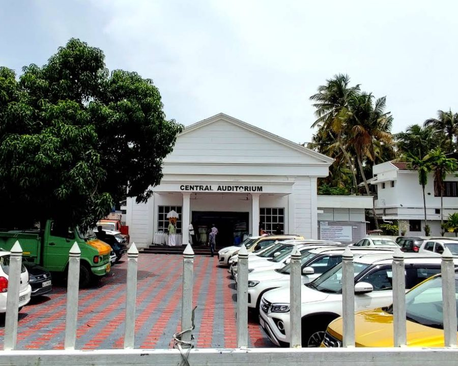
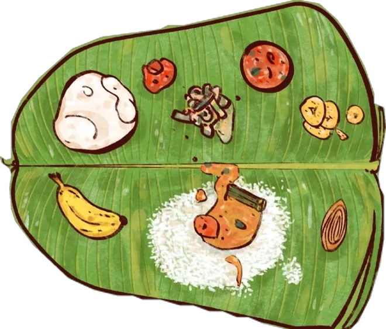
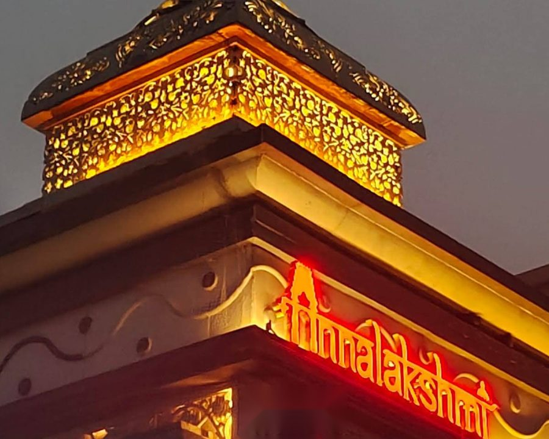

29
Wedding
Sunday · November 2026Muhurtham8:00 AM – 9:20 AM

Central AuditoriumNorth Paravur, Kerala
- 7:00 AMBreakfast
- 8:00 – 9:20 AMThalikettu Muhurtham
- From 11:30 AMSadya

Desktop · 1440px (scaled to fit)
Mobile · 390px
WeddingCard.css:121, :134), so at 390px it runs past the card edge and gets clipped. The musicians sit off to one side, so the scene is lopsided.WeddingCard.css:40, 54, 69, 86, 99; the train boards drop to 7.5–9px at TrainJourney.css:309–311). On mobile, "Evening celebration" wraps onto two lines.WeddingCard.css:97), below the 44px tap target.EventsSection.css:23) and the header-to-cards gap up to 72px (:26). The section is 1245px tall on desktop and 1602px at 390px.EventsSection.css:25), gradient-clipped "Shubha Muhurtham" text (:11–15), and heavy drop-shadows on the scene art (WeddingCard.css:123, 127; ReceptionCard.css:196). The station boards' text is too small (TrainJourney.css:309–311).EventsSection.css:22–176) aren't used by the current markup. Removing them makes later changes safer.--burg, --burg-d, --champ, --gold, --gold-l, --ivory). No new colours.| Sharp: no blur, backdrop-filter, noise or low-res assets | pass |
| Aligned: one content width, shared left edges | pass |
| Balanced pairs: subgrid rows, equal card heights | pass |
| No wasted space: 14% shorter on desktop, slightly shorter on mobile with larger text | pass |
| Clear hierarchy: date, then event, then time and venue, then schedule | pass |
| Text/image proportion: scene is about 28% of card height | pass |
| Desktop + 320/375/390/430: no overflow, taps ≥ 44px | pass |
| Matches system: existing tokens and fonts | pass |
src/data/events.ts, weddingData.ts and public/images/.events.ts (e.g. "Served at the auditorium as guests arrive."). The current site and this mockup leave the notes out to keep the cards compact. They could be shown if you'd like.Shubha Muhurtham
Muhurtham8:00 AM – 9:20 AM

Central AuditoriumNorth Paravur, Kerala

Evening6:00 PM – 10:30 PM

Annalakshmi Restaurant6 Mayor Ramanathan Salai, Chennai
Next: tell us you're coming